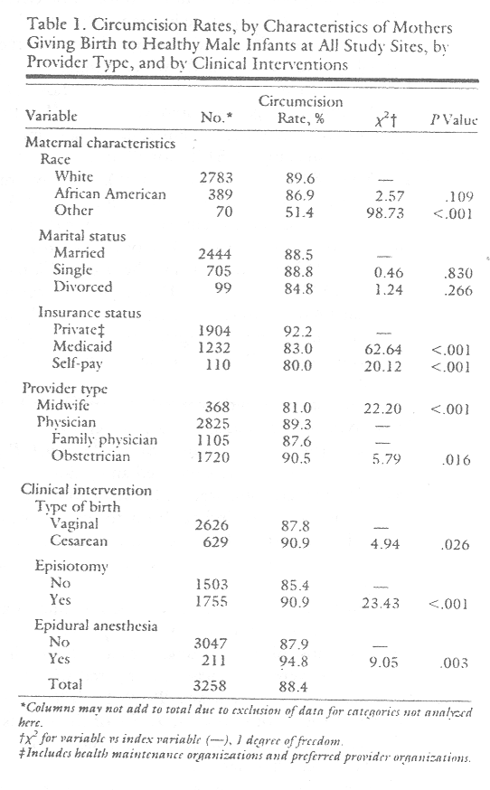
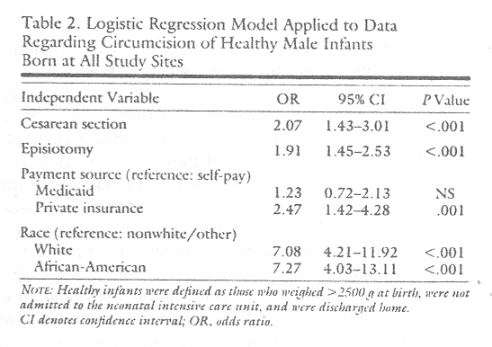
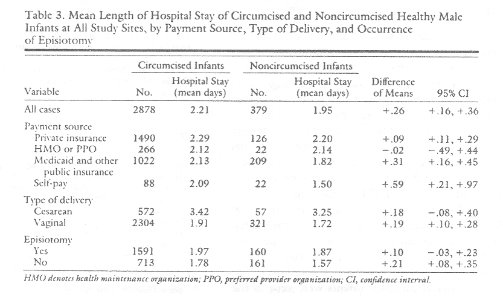

THE CIRCUMCISION REFERENCE LIBRARY
Christopher J. Mansfield, William J. Hueston, Mary
Rudy
Greenville, North Carolina; Eau Claire and Madison,
Wisconsin; and Morehead, Kentucky
Background. Controversy exists regarding the efficacy of routine neonatal circumcision of male infants. Little is known about parental or provider characteristics or the use of medical resources associated with this procedure.
Methods. Records of 3703 male infants born during 1990 and 1991 at four US sites were analyzed to discern associations between circumcision and the above factors. Analyses were limited to healthy infants.
Results. Eighty-five percent of the infants in the study population were circumcised. White and African-American male infants were much more likely to be circumcised than those of other races (odds ratios [ORs], 7.3 and 7.1, respectively, P<.001). Compared with self-pay patients, those covered by private insurance were 2.5 times more likely to be circumcised (P<.001). Logistic regression showed that rates for obstetricians and family physicians were not significantly different. Increased odds of circumcision were found if the mother received an episiotomy (OR=1.9, P<.001) or cesarean section (OR=2.1, P<.001).
Circumcised infants stayed in the hospital an average of one fourth of a day longer than did those who were not circumcised (mean difference, 0.26 days; 95% confidence interval, 0.16 to 0.36).
Conclusions. Mother's insurance status and race as well as surgical interventions during delivery are related to circumcision. Associations with episiotomy and cesarean section suggest physician and/or parental preference for interventional approaches to health care. Generalizing the difference in hospital length of stay to the United States suggests an annual cost between $234 million and $527 million beyond charges for the procedure itself.
Key words. Circumcision; infant, newborn; male; socioeconomic factors; cesarean section; episiotomy; specialties, medical, length of stay; hospital costs. (J Fam Pract 1995; 41:370-376)
Although circumcision is the most commonly performed surgical procedure in the United States,1 there is no clear evidence of efficacy for routinely performing it on newborn male infants. The American Academy of Pediatrics (AAP) Committee on the Fetus and Newborn stated in 1971 that "there are no valid medical indications for circumcision in the newborn period."2 The AAP reiterated this position in 19753 and the American College of Obstetrics and Gynecology adopted it in 1983.4
Because of evidence suggesting that circumcision may have a protective effect on the occurrence of urinary tract infection (UTI),5,6 sexually transmitted disease (STD), and cancer of the cervix (associated with the human papillomavirus), the AAP Task Force on Circumcision modified its position in 1989. It stated, however, that the evidence regarding UTI is tentative and that evidence relating to STDS is conflicting. Noting that pain and resultant behavior changes in the infant have been reported, the Task Force cited studies that allowed it to estimate a complication rate between 0.2% and 0.6%. It concluded that newborn circumcision has potential medical benefits and advantages, as well as disadvantages and risks. The Task Force recommended that parents be well informed and advised before making the decision.7
The longstanding controversy surrounding the efficacy of routine neonatal circumcision in the United States continues.8-14 It currently centers principally on the claims of prophylactic efficacy with regard to prevention of UTI15,16 and the risk of contracting STDs.17 Although they would be difficult to conduct, controlled prospective studies were recommended as early as 1966.18,19 Results of recent decision analyses and cost-efectiveness analyses do not support the procedure's efficacy. Lawler et al20 reported a cost-efectiveness study that found virtually no difference in lifetime cost of circumcision vs no circumcision and a theoretic benefit of only 10 days of additional life afforded by circumcision. A cost-utility analysis by Ganiats et al21 suggests that any medical advantage is canceled out by financial disadvantage and recommends, as did Lawler, that decisions should be made based on personal, cultural, or religious factors.
Given the lack of consensus about the efficacy of routine neonatal male infant circumcision and increased concern about cost containment, an understanding of length of stay and other factors associated with choosing the procedure would be useful. There are no reported studies of the effect of circumcision on length of stay, and the literature on socioeconomic and other parental characteristics related to circumcision is spare. A few studies that have been published report international rates for circumcision,14 prevalence by race and income among US adults in the late 1960s,22 incidence in Illinois hospitals in 1979,23 and demographic data for infants born in New York State between 1980 and 1986,24 but little has been reported about the association of circumcision with socioeconomic characteristics of the parents. Only two studies of the characteristics of physicians performing the procedure25,26 were found. They report a difference between pediatricians' and family physicians' attitudes about the procedure. No study comparing the frequency with which this procedure is performed by obstetricians and family physicians in the United States has been reported.
There is, however, considerable literature describing variation in surgical rates and other health services related to provider characteristics.27-33 Training in obstetrics is more surgically oriented than that in family medicine, and midwives are noted for employing minimal intervention.34 Are healthy male infants more likely to be circumcised if delivered by obstetricians than by family physicians? By midwives? Is circumcision associated with other surgical interventions in the delivery process or with the use of high-cost, sophisticated anesthesia during labor and delivery?
The association of neonatal male circumcision with sociodemographic characteristics of the mother, specialty of provider attending birth, and clinical procedures employed during labor and delivery were examined in this study. It was hypothesized that circumcision is performed more commonly on healthy infants born to mothers who: have insurance; are white; are married; obtained their care from an obstetrician vs a family physician or from a physician vs a nurse midwife; gave birth by cesarean section; had an episiotomy; or received epidural anesthesia in the delivery process. The association between circumcision and length of the newborn infant's stay in the hospital also was examined.
Methods
Medical records for 7138 labor and delivery admissions occurring at four hospitals during the period January 1, 1990 to December 31, 1991 were abstracted by labor and delivery nurses or trained personnel. The hospitals, located in Michigan, South Dakota, Kentucky, and North Carolina, were selected for diversity. Two of the hospitals are nonprofit community hospitals, one is a church-operated community hospital, and one is a public hospital that serves as the primary teaching facility for a state-supported medical school. Two hospitals are in metropolitan statistical areas; the other two are in rural areas. Cases were selected using a computer-generated random number sequence to sample 80 births per month at each of the sites. When fewer than 80 deliveries occurred during a given month, all deliveries for that month were included in the sample. Infant records were matched with the mother's records, and data were abstracted from both. The main outcome measure was whether a circumcision was performed during the newborn infant's hospital stay.
The study was conceptualized as an historical cohort analysis. Independent variables of interest in this report are maternal race and marital status, method of payment, infant's birthweight and length of hospital stay, provision of neonatal intensive care, specialty of attending physician, and whether the mother received epidural anesthesia or an episiotomy, or gave birth by cesarean section. Data measuring the variables of interest were unambiguous, uniformly available, and believed to be accurately reported in charts. Parents' religion was not consistently recorded at all sites and therefore was not reported. Method of payment was included to serve as a proxy measure of patient income status, for which data were not available. Method of payment was recorded as private insurance, health maintenance organization (HMO), preferred provider organization (PPO), Medicaid or other public insurance, self-pay, or other. It was assumed that self-pay patients were poor. "Provider" was defined as the individual who initially cared for the patient in labor, regardless of who attended delivery or performed delivery procedures.35 "Healthy infants" were defined as those who did not have low birthweight, were not admitted to intensive care, and were discharged home.
All variables except birthweight were categorical. The categorical variables were analyzed by table analysis to calculate rates and chi-square. Birthweight of <2500 g was considered low. All statistics were calculated using SPSS (SPSS for Windows, Release 6.0. SPSS, Inc, Chicago, 111). A .05 level of statistical significance was established. Following bivariate analysis, multiple logistic regression was employed to compute odds ratios (ORs) and confidence intervals (CIs), controlling for each of the other significant independent variables, and to explore predictive models. Forward stepwise entry was employed on a predictive model using data from all sites, entering categorical variables with statistical significance of [less than or equal to] .05. Nurse midwives were not considered in the regression model because they were represented at only one site. Length of stay was examined using a t test for difference of means, chi-square for the association of circumcision with short vs long stays, and stepwise multiple regression to discern the independent effect of circumcision on length of hospital stay.
Results
Of the 7138 births, 3702 (52%) were male infants. Eighty-four percent of the mothers were white; 13% were African American. American Indian, Hispanics, and Asians each constituted approximately 1% of the sample.
Seventy-four percent of mothers were married; 23% were single; 3% were divorced. Fifty-eight percent had private insurance (including HMOs); 38% had Medicaid or other public insurance; and, 4% were self-pay patients. Only 8% were enrolled in HMOs, with the percentage varying between 26% at the Michigan site and 2% or less at the other three. There was no significant difference in circumcision rates between those covered by HMOs (91:5%) and other private insurance (89.7%).
In 55% of the births, the attending physician was an obstetrician, while in 33% the physician's specialty was family medicine. Ten percent of births were attended by a nurse midwife, all at one site.
Care at the four sites was provided by a total of 125 obstetricians, 163 family physicians, and 11 midwives. Overall, the cesarean section rate was 21%, ranging between 16% and 27% among the four sites. Sixty-three percent of deliveries involved an episiotomy (range, 39% to 79%). Epidural anesthesia to manage maternal pain in the labor and delivery period was used in 6.3% of all cases (range, 3.5% to 11.0%).
Overall, 85% of the male infants were circumcised. The circumcision rate ranged from 78% to 94% among the sites. An association between circumcision and infant health was evident overall and at three of the four sites. Low-birthweight infants and those admitted to a neonatal intensive care unit (NICU) were much less likely to be circumcised. Only 62% of infants admitted to NICU were circumcised, compared with 88% of those who were not (P<.001).
The following analyses involves only healthy infants (n=3258, 88% of all male infants). The overall circumcision rate for healthy infants was 88.4%. Table I shows the relationship between circumcision and maternal characteristics, type of provider, type of delivery, episiotomy, and use of epidural anesthesia. Statistically significant associations between circumcision and six of the variables were found. There was no significant difference according to marital status but there was for insurance status. Infants in the self-pay category were less likely to be circumcised than were those whose birth was covered by private insurance (80.0% vs 92.2%, P<.001). There was also a difference in the proportion circumcised for those covered by Medicaid (83.0%) vs private insurance (92.2%, P<.001).
|
 |
There was no statistically significant difference in overall circumcision rates for white compared with African-American infants but there was for those of other racial/ethnic groups compared with whites. For those in the "other" category, ie, Hispanic, Asian, and Native American, the rate was 51.4% for all sites combined, compared with 89.6% for whites (P<.001). There was marked site-to-site variation in both the proportion of African-American births and circumcision rates for these infants. At the North Carolina site, 45% of the healthy male. infants were African American and the circumcision rate for these was 86%. At the South Dakota and Kentucky sites, less than 1% were African American and virtually all were circumcised. At the Michigan site, African Americans constituted only 3.5% of the male infants but 100% were circumcised.
The difference in the percentage circumcised according to type of birth was small (3.1 percentage points) but significant (90.9% if cesarean vs 87.8% if vaginal, P<.05). For those whose mothers received an episiotomy, 90.9% were circumcised compared with 85.4% if not (P<.001). Among healthy male infants born to women who had epidural anesthesia, 94.8% were circumcised, compared with 87.9% whose mothers did not have an epidural (Plt;.01).
The bivariate analysis also revealed significant associations according to provider type and physician specialty. Of those whose birth was attended by a midwife (all at one site), 81.0% were circumcised, compared with 89.3% of those delivered by physicians (Plt;.001). If the attending physician was an obstetrician, 90.5% of the infants were circumcised, compared with 87.6% of those delivered by family practice physicians (P<.05).
The logistic regression model applied to data for healthy infants from all sites did not include midwives as a covariate but did include physician specialty. The model does not substantiate a difference associated with physician specialty. Neither does it show a difference associated with use of epidural anesthesia. It does, however, show cesarean section and episiotomy to be independently associated with substantially increased odds of circumcision (Table 2). The regression model fit the overall data well, correctly classifying 89.6% of the cases (model [[χ].sup.2] = 121; 6 degrees of freedom [df]). The model also fit the data well when applied to three of the individual sites: 72.8 (6 df), 33.2 (5 df), and 22.3 (4 df). In this model, each surgical intervention was independently associated with approximately double the likelihood of circumcision. This phenomenon was also evident and significant at two of the four sites.
|  |
If the mother had a cesarean section, the odds ratio for all sites combined was 2.07 (95% CI, 1.43 to 3.01). If the mother had an episiotomy, it was 1.91 (95% CI, 1.45 to 2.53). At one of the sites where cesarean section was associated with circumcision, the odds ratio for cesarean section was 5.58 (95% CI, 1.86 to 17.28); at the other, it was 2.45 (95% CI., 1.26 to 4.75). For episiotomy, the odds ratio at one site was 2.20 (95% CI, 1.33 to 3.63); at another site, the odds ratio was 2.14 (95% CI, 1.13 to 4.05). Race other than white or African American was clearly a predictor of lower likelihood of circumcision. Compared with infants in the other race category, whites and African Americans were both about seven times more likely to be circumcised.
Payment source was also a significant factor, predicting substantially lower likelihood of circumcision for those in the self-pay or Medicaid categories. The odds ratio if the mother had private insurance was 2.47, compared with a self-pay patient (95% CI, 1.42 to 4.28). The difference in odds between those in the Medicaid vs the self-pay category was not significant. Those covered by Medicaid were about half as likely to be circumcised as those covered by private insurance.
We found shorter lengths of stay among healthy infants who were not circumcised (Table 3). The mean length of the infant's stay was 2.21 days if circumcised; 1.95 days if not. The difference, 0.26 days, was statistically significant (95% CI, 0.16 to 0.36). This relationship was noted across all payment groups except HMOs and PPOs, for both cesarean and vaginal deliveries, and regardless of whether the mother received an episiotomy. A large difference in the proportion circumcised was noted, particularly for the 2265 vaginally delivered, healthy infants staying 1 day, compared with those staving 2 days or more. Twenty-eight percent stayed only 1 day. For these, the circumcision rate was 8 1.9% vs 90.1% for those staying 2 days or more. Conversely, 41.7% of those not circumcised went home in 1 day as compared with only 25.9% of those who were circumcised. This difference was statistically significant (χ2=35.4, 1 df, P<. 001. The association of circumcision with length of stay, independent of the variables which were shown to predict circumcision itself, was determined by regressing the natural log of infant length of stay on circumcision and the variables from the logistic model. These independent variables, cesarean section, episiotomy, source of payment, race, and circumcision, were all retained in the multiple regression equation, which explained 35% of the variance (adjusted [R2]=.349).
|  |
Discussion
The effect of lack of private insurance on utilization of hospital services is frequently reported, and others29 have reported circumcision rates for Medicaid patients in a single state. However, the associations of insurance status categories with circumcision reported here are new findings. These relationships hold even after controlling for race/ethnic groups. Though there was no measure of economic status, Medicaid and self-pay payment sources may be a proxy measure for income status or wealth. If that assumption is accepted, one could conclude that the poor are only half as likely to be circumcised.
The geographic variation in rates for African Americans is a new finding that should be further explored. It suggests caution in generalizing findings about the use of health services by African Americans based on limited geographic data. It also suggests further study of the reasons for variation in the rate of circumcision among African Americans.
We did not find data to support a link between circumcision and the use of epidural anesthesia for managing maternal pain during labor and delivery. The hypothesis of an association with other surgical interventions in the delivery process, however, cannot be rejected. The independent associations of cesarean section and episiotomy with circumcision are substantiated by the aggregate data and by data from two of the individual sites. There was a statistical relationship between these three surgical procedures. If the mother received either an episiotomy or a cesarean section, both of which may be performed more frequently than clinically necessary, the infant was twice as likely to be circumcised. It would be useful to examine patterns of procedures performed by individual physicians to better understand interventionist practice styles.
Because it is possible that some mothers or fathers are predisposed to more or less intervention in the birth and neonatal process as well, it is important to gain a better understanding of their expectations. It is quite likely that much of the variability in incidence of circumcision could be explained by customs of circumcision within families, religious beliefs, cultural attitudes, and beliefs of parents. Similar examination of the beliefs and attitudes of physicians, particularly with regard to perceived medical efficacy is warranted. A principal limitation of this study is that data to answer these questions are not available in the typical medical record. Another limitation is that we did not have access to data on the incidence of circumcision after the neonatal hospital stay. Both limitations are inherent in retrospective studies.
The finding in this study of an association with increased length of stay is important and deserves further evaluation. These were randomly selected, healthy infants. The effect was noted for infants delivered both vaginally and by cesarean section, across sources of payment and regardless of whether an episiotomy was performed. We cannot say that circumcision is the only variable likely to systematically account for the longer stay, but it appears to have an impact independent of other factors that commonly affect length of stay. Using an estimate of $700 for the daily room charge for maternity care and $200 per day for newborn care, additional charges beyond the cost of the procedure itself at these four hospitals annually are calculated to be between $793,419 and $1,785,240 (7115 male births x 88% healthy x 88% circumcised x [0.26 days [+ or -]0.10] x $900/day). If this finding were generalized to the United States, the annual national impact would be somewhere between $234 million and $527 million (2,100,000 male births X 88% X 88% X [0.26 [+ or -] 0.10] X $900/day). We do not know why circumcised infants were kept in the hospital for a longer time. It may be due to complications, waiting for a physician to perform the procedure, or other reasons. A cost difference of the magnitude suggested here deserves further study and accentuates the question of whether this procedure, which has little medical justification, should be routinely paid for by health insurance.
Additional study of physician practice styles and the roles of parents' culture, religion, personal preference, and expectations would also be useful. Considering the procedure as a health insurance benefit, how sensitive is the consumer to price? Would parents still consider the procedure important if they, rather than their insurers, had to pay for it? The rate of circumcision within the self-pay category in these data suggests substantial sensitivity to price. Regardless of whether routine circumcision should be included as a health insurance benefit, health service administrators and planners should consider whether staffing arrangements or other factors delay the procedure. Do complications produce delays in discharge? Should routine circumcision be an outpatient procedure? Should it be performed by nonphysician providers? Should it continue to be routinely performed?
Acknowledgments
This work was supported in part by a grant (HS07012-01) from the Agency for Health Care Policy and Research.
The authors wish to thank the following individuals and sites for their assistance and cooperation in gathering the data for this study: Matthew A. Stiles, MD, of St. Claire Medical Center, Morehead, KY; Dana King, MD, Julius Mallette, MD, and Dawn Arnold, RN, of East Carolina University and Pitt County Memorial Hospital, Greenville, NC; Richard R. McClallin, MD, of Sioux Falls Family Practice and McKennen Hospital, Sioux Falls, SD; James A. Applegate, MD, of Familycare Southeast and St. Mary's Hospital, Grand Rapids, MI. We also thank Donald Holbert, Phd, and Paul Vos, PhD, of East Carolina University, for their consultation on the statistical analysis of these data.
References
Submitted, revised, March 20, 1995.
This work was presented in part at a meeting of the North American Primary Care Research Group, November 1993, San Diego, California.
From the Department of Family Medicine, East Carolina University School of Medicine, Greenville, North Carolina (C.J.M.); the Department of Family Medicine and the Eau Claire Family Practice Residency, University of Wisconsin-Madison School of Medicine (W.J.H.); and St Claire Medical Center, Morehead, Kentucky (M.R.).
Requests for reprints should be addressed to Christopher J. Mansfield, PhD, Center for Health Services Research and Development, Physicians Quadrangle, Building N, East Carolina University.
[CIRP note: See also Comment by R. S. Van Howe.]